iii. Settting up the environment - Windows
Introduction
Installing the environment on a Windows machine is more time consuming and tedious than if you are doing that on Linux because you need to manually download and install some pieces of software. The screenshots bellow were a contribution from Priscila.
This page is still a work in progress. So I am planning to add more details later.
Install VirtualBox
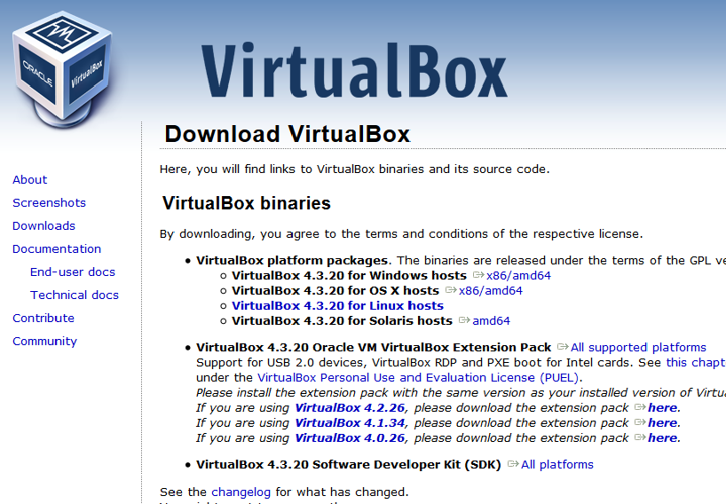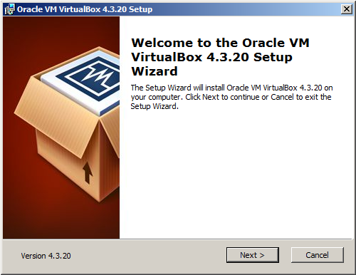
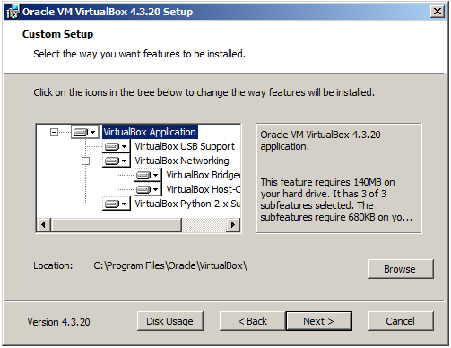
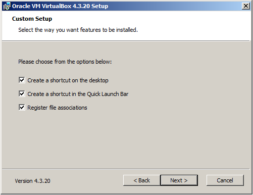
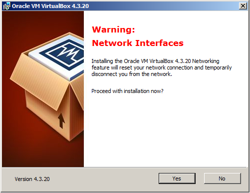
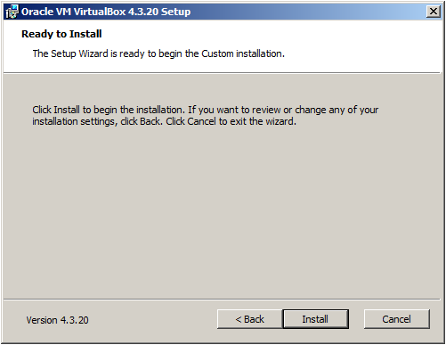

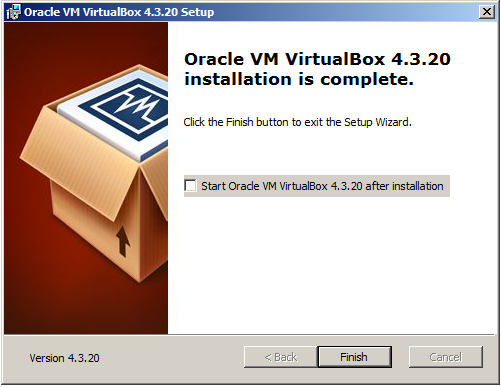
Install Vagrant
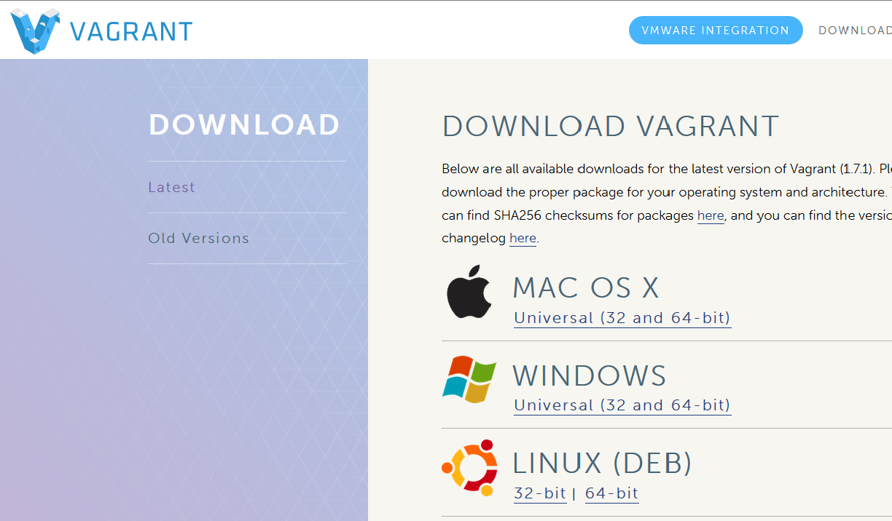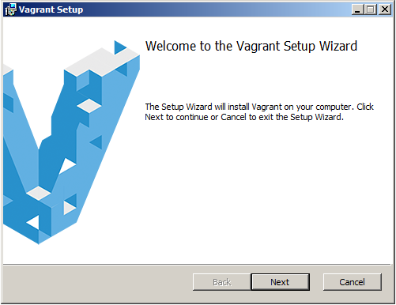
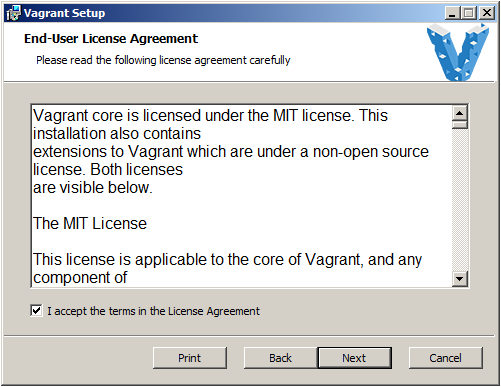

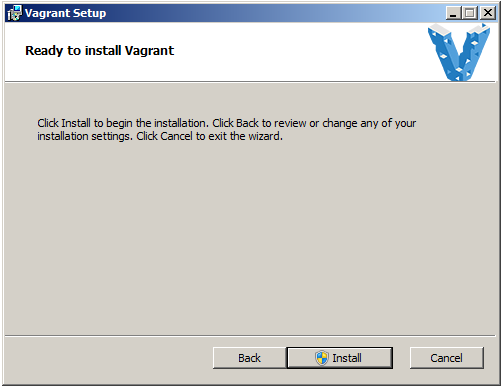
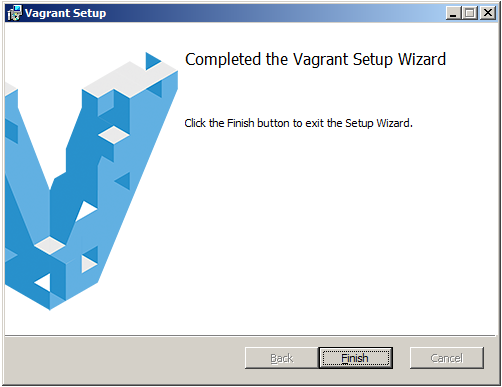
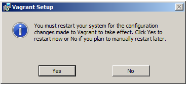
Download Putty
There is no actual installation. You simply copy it to your PC and run it.
http://www.chiark.greenend.org.uk/~sgtatham/putty/download.html
Create your VM
On DOS or PowerShell, type the following:
mkdir JavaClasses cd JavaClasses vagrant plugin install vagrant-vbox-snapshot vagrant up vagrant halt vagrant snapshot take clean